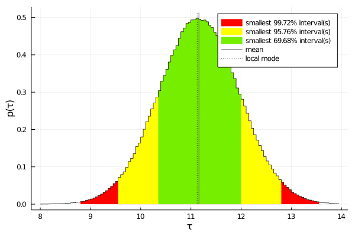

EFTfitter.jl - BLUE Example
When using multiple measurements of a single observable and a uniform prior for the parameter representing the combined value, the combination of measurements performed with EFTfitter.jl yields the same results as the Best Linear Unbiased Estimator (BLUE) method.
Here, we demonstrate this by using the examples of the paper "How to combine correlated estimates of a single physical quantity" by L. Lyons, D. Gibaut and P. Clifford (https://www.sciencedirect.com/science/article/pii/0168900288900186). All numbers are taken from the example on charm particle lifetime experiments in section 5. A factor of 10^13 is applied for convenience.
using EFTfitter
using BAT
using IntervalSets
using Statistics
using StatsBase
using LinearAlgebra
using PlotsWe need one parameter for the best estimator and choose a uniform distribution in the range 8 to 14 as prior:
parameters = BAT.NamedTupleDist(
τ = 8..14,
)When combining multiple measurements of the same observable, only a function returning the combination parameter is needed:
estimator(params) = params.τIn Eq. (17') of the reference paper the following covariance matrix is given:
covariance = [2.74 1.15 0.86 1.31;
1.15 1.67 0.82 1.32;
0.86 0.82 2.12 1.05;
1.31 1.32 1.05 2.93]For using this in EFTfitter.jl, we first need to convert the covariance matrix into a correlation matrix and the corresponding uncertainty values:
corr, unc = EFTfitter.cov_to_cor(covariance)
measurements = (
τ1 = Measurement(estimator, 9.5, uncertainties = (stat=unc[1],) ),
τ2 = Measurement(estimator, 11.9, uncertainties = (stat=unc[2],) ),
τ3 = Measurement(estimator, 11.1, uncertainties = (stat=unc[3],) ),
τ4 = Measurement(estimator, 8.9, uncertainties = (stat=unc[4],) ),
)
correlations = (
stat = Correlation(corr),
)construct an EFTfitterModel:
model = EFTfitterModel(parameters, measurements, correlations)
posterior = PosteriorDensity(model);sample the posterior with BAT.jl:
algorithm = MCMCSampling(mcalg =MetropolisHastings(), nsteps = 10^6, nchains = 4)
samples = bat_sample(posterior, algorithm).resultplot the posterior distribution for the combination parameter τ:
plot(samples, :τ, mean=true)
print numerical results of combination:
println("Mode: $(mode(samples).τ)")
println("Mean: $(mean(samples).τ) ± $(std(samples).τ)")Mode: 11.15985 Mean: 11.15471 ± 0.80180
Comparison with BLUE method
blue = BLUE(model)
println("BLUE: $(blue.value) ± $(blue.unc)")
println("BLUE weights: $(blue.weights)")BLUE: 11.15983 ± 1.28604 BLUE weights: [0.145, 0.470, 0.347, 0.038]
This page was generated using Literate.jl.